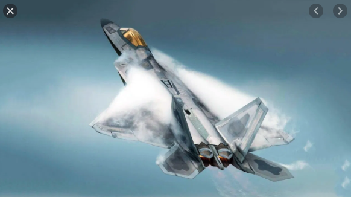
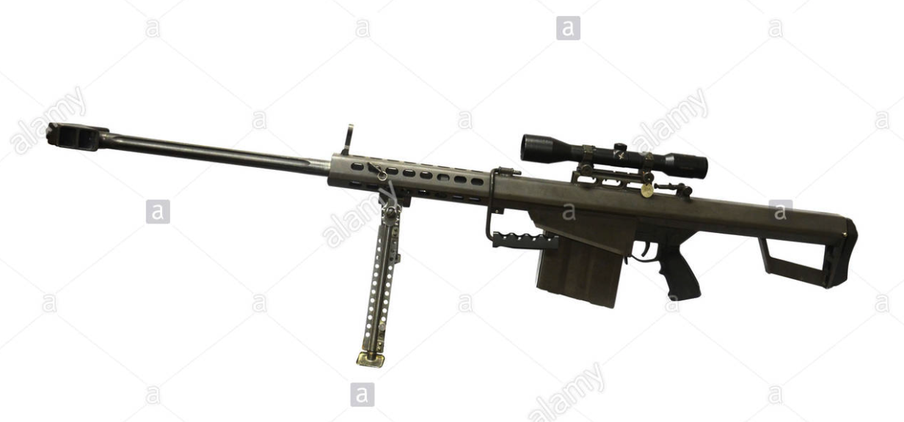

<!DOCTYPE html>
<html lang="en">
<head>
    <meta charset="UTF-8">
    <title>Javier P. Estrada</title>
    <style>
        #bg {
            background-image: image('images/backbroung1.png');
            background-repeat: no-repeat;
            /*background-size: cover;*/
            background-size: 100%;
            background-position: center;
            border: solid 2em;
        }
        #headertext{
            color: black;
        }
        header{
            background: #2677F2;
            color: #fff;
            padding: 20px;
            text-align: center;
            border-bottom: 5px #000 solid;
            margin-bottom: 10px;
            border-right: 5px #000 solid;
            margin-right: 10px;
            border-top: 5px #000 solid;
            margin-top: 10px;
            border-left: 5px #000 solid;
            margin-left: 10px;
        }
        #container{
            width: 90%;
            margin: auto;
            padding: 12px;
        }
        .status {
            padding: 10px;
            position: fixed;
            top: 0;
            right: 0;
            background-color: #000;
            color: #ffffff;
            z-index: 900;
        };
    </style>
</head>
<body>
<!--<body background="graphics/backgroung1.png">-->


</body>
</html>
<!--background image called 'bg'-->
<div id="bg"></div>
<!--Lockheed Martin F-22 Raptor -->
<header>
    <h1 id="headertext">My Favorite things</h1>
</header>

<article>
    <h2>F-22 Raptor</h2>
    <p>The F-22 Raptor is the Air Force's newest fighter aircraft.
        Its combination of stealth, supercruise, maneuverability,
        and integrated avionics, coupled with improved supportability,
        represents an exponential leap in warfighting capabilities.Sep 23, 2015.
    </p>
    <div class="status1">
        <ul>
            <li>Payload: same as armament air-to-air or air-to-...</li>
            <li>Speed: mach two class with supercruise capa...</li>
            <li>Length: 62 feet, 1 inch (18.9 meters)</li>
            <li>Thrust: 35,000-pound class (each engine)</li>
        </ul>
    </div>
    
    <h2>Barrett M82 anti-materiel rifle</h2>
    
    <p>​​​This weapon has a wide reach, and its calibre is suitable for
        destroying land mines or other explosives from a dis​tance.
        It was developed in the USA in 1982, and introduced to the
        Norwegian Armed Forces ​in the 1990s..
    </p>
    <div>
        <ul>
            <li>Manufacturer: Barrett Firearms, USA</li>
            <li>Price: $9,000.00 and $12,750</li>
            <li>Length: 1,440 mm</li>
            <li>Weight, unloaded: 12.9 kg</li>
            <li>Calibre: 12.7 x 99 mm</li>
            <li>Magazine capacity: 10</li>
            <li>Muzzle velocity: Approximately 850 m/s</li>

            <li>Magazine capacity: 10</li>
            <li>Rate of fire: 10 shots per minute​</li>
        </ul>
    </div>
</article>

<article>
    <h2>Orange</h2>
    <p>The orange is a hybrid of ancient cultivated origin, possibly between pomelo and tangerine...</p>
</article>

<article>
    <h2>Banana</h2>
    <p>Bananas come in a variety of sizes and colors when ripe, including yellow, purple, and red...</p>
</article>
<script>
    $(document).ready(function() {
        // alert($(window).scrollTop());
        $(window).scroll(function () {

            let winScrollPosFrmTop = $(window).scrollTop();
            $(".status").html(winScrollPosFrmTop);

        })
        let winScrollPosFrmTop = $(window).scrollTop();
        $(".status").html(winScrollPosFrmTop);


    })

</script>
</body>
</html>